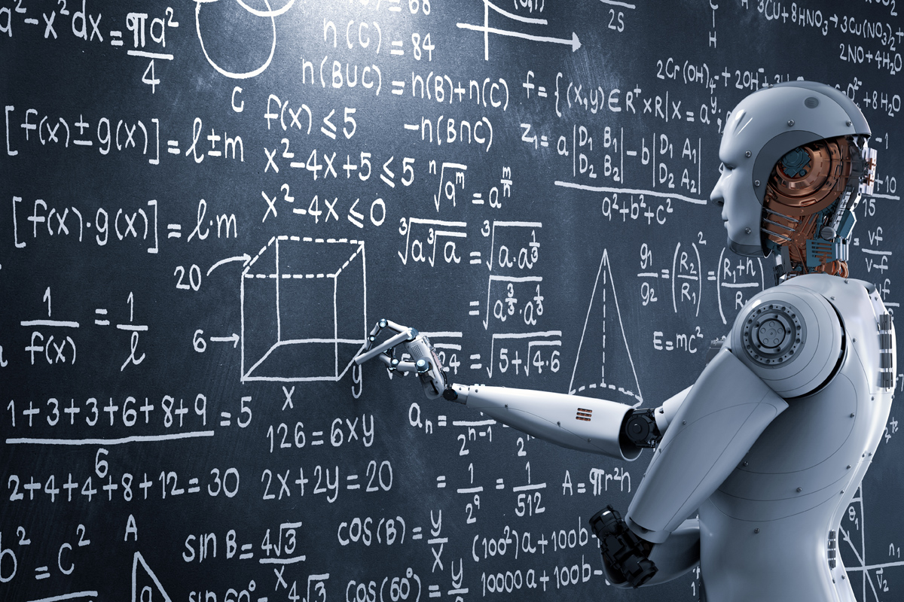

La Robótica: Abriendo Caminos hacia un Futuro Inteligente
La robótica ha dejado de ser un concepto de ciencia ficción para convertirse en una realidad tangible que está transformando nuestra sociedad y nuestra forma de vida. Desde la fabricación industrial hasta los hogares inteligentes, la robótica está desempeñando un papel cada vez más importante en nuestra vida diaria. La robótica se centra en el diseño, desarrollo y aplicación de robots inteligentes y autónomos. Estos robots son capaces de llevar a cabo una amplia gama de tareas, desde tareas rutinarias y repetitivas hasta operaciones altamente complejas en entornos desafiantes. Uno de los campos en los que la robótica ha tenido un impacto significativo es la industria. Los robots industriales están revolucionando la producción, mejorando la eficiencia, la precisión y la calidad de los procesos de fabricación. Estos robots pueden realizar tareas repetitivas de manera rápida y precisa, liberando a los trabajadores humanos para que se concentren en tareas más creativas y estratégicas. Pero la robótica no se limita solo a la industria. También está presente en el ámbito de la medicina, donde los robots quirúrgicos de alta precisión están cambiando la forma en que se realizan las intervenciones médicas. Estos robots permiten a los cirujanos llevar a cabo procedimientos más precisos y menos invasivos, lo que resulta en tiempos de recuperación más cortos y mejores resultados para los pacientes.

Además, la robótica está desempeñando un papel cada vez más importante en la asistencia y el cuidado de las personas. Los robots de asistencia personal pueden ayudar a las personas mayores o con discapacidades a llevar a cabo tareas cotidianas, mejorando su independencia y calidad de vida. También se están desarrollando robots de compañía que brindan apoyo emocional y social a las personas que viven solas o en situaciones aisladas. La robótica también está presente en nuestros hogares, con el auge de los hogares inteligentes. Los robots domésticos pueden limpiar, cocinar, vigilar la seguridad y proporcionar entretenimiento, convirtiendo nuestros hogares en espacios más eficientes y cómodos. A medida que la robótica avanza, también surgen desafíos éticos y sociales. La interacción entre humanos y robots plantea preguntas sobre la privacidad, la seguridad y el impacto en el empleo. Es importante abordar estos desafíos y establecer regulaciones y normas adecuadas para garantizar un desarrollo responsable y beneficioso de la robótica. En resumen, la robótica está cambiando el mundo que conocemos. Desde la industria hasta la medicina, pasando por nuestros hogares, los robots están desempeñando un papel crucial en nuestra sociedad. La robótica nos ofrece la oportunidad de mejorar la eficiencia, la productividad y la calidad de vida, y nos desafía a explorar nuevos límites y posibilidades. A medida que avanzamos hacia un futuro cada vez más inteligente, la robótica seguirá abriendo caminos hacia una nueva era de avances tecnológicos.